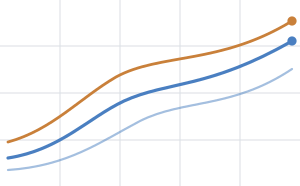
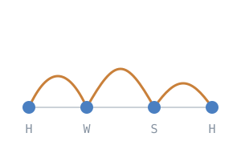
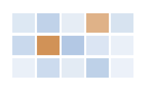

Research
My research examines how observed driving and travel behavior can be represented, generated, and evaluated in transportation models. Across driving behavior, human mobility, and traffic safety, I use vehicle trajectories, travel surveys, location-based mobility data, and microscopic traffic simulation to develop and validate behaviorally plausible models. A complete list of publications is available on the Publications page.
Driving Behavior Modeling & Simulation
Vehicle trajectory data provide detailed observations of speed, acceleration, car-following, and lane-changing behavior but do not directly identify latent behavioral states or the effects of surrounding traffic conditions. I use clustering and LLM-based conditional generation to characterize heterogeneous driving patterns and reproduce them in microscopic traffic simulation. The resulting models are evaluated by comparing generated and observed trajectory distributions and traffic-flow characteristics in SUMO and VISSIM.

Selected work
- Contextual Modeling of Real-World Driving Behavior with Large Language Models and Realistic Reproduction in Traffic SimulationTRB · 2026
- A Methodological Framework for Driving Behavior Analysis Based on Real-World Trajectory DataIJHE · 2026
- Personality on the Road: Driving Behavior Analysis and Trajectory Generation (Best Paper)KST · 2025
- Clustering-Based Aggressive Driving Analysis and Trajectory Generation (Best Paper)ITS Asia-Pacific · 2025
- Evaluation of Autonomous Vehicle Legal Compliance Using Traffic SimulationKSITS · 2023
- Vehicle trajectories
- Driving behavior heterogeneity
- Behavioral clustering
- Microscopic traffic simulation
- SUMO / VISSIM
Human Mobility Modeling & Synthesis
I develop individual-level travel chains and synthetic populations using travel survey and location-based mobility data. This work examines how activity sequences, departure times, and destinations can be represented while maintaining consistency with observed travel patterns at the aggregate level. Survey observations and retrieved evidence are used to constrain the generation process, with attention to behavioral fidelity and privacy protection.

Selected work
- Synthesizing Human Mobility Patterns Using Large Language Models — A Sejong City Case StudyJ. KST · 2026
- Development of a Method for Synthesis of Individual-Level Travel ChainsKSITS · 2026
- Synthesizing Human Mobility Patterns Using Retrieval-Augmented ModelsKST · 2025
- Travel behavior
- Travel surveys
- Travel chains
- Synthetic populations
- Privacy-preserving data synthesis
Traffic Safety & Operations
My work integrates observed crash data with simulation-derived traffic conflict measures to analyze crash risk under conditions with limited observed outcomes. Crash records provide observed safety outcomes, while microscopic traffic simulation supports the analysis of conflicts and operational conditions that may not be sufficiently represented in historical data. Related research addresses hazardous driving indicators, pedestrian trajectory prediction, and lane-level traffic-state estimation using vehicle-mounted LiDAR.

Selected work
- A Hybrid Traffic Crash Risk Analysis Modeling of Crash Data-Driven Analysis and Microscopic SimulationsIEEE ITSC · 2025
- A Hybrid Framework for Traffic Crash Risk Analysis Using Crash Data and Microscopic SimulationsTRB · 2026
- Predicting Traffic Crash Severity: A BERT-Based Modeling Approach (under review)AAP · 2026
- Multi-Modal Trajectory Prediction of Child Pedestrians Using a Unified Transformer ModelTRB · 2026
- LiDAR on the Move: Extracting Lane-Level Traffic Indicators from Autonomous VehiclesTRB · 2026
- Crash risk analysis
- Surrogate safety measures
- Traffic conflicts
- Vulnerable road users
- Traffic-state estimation
Master's thesis
LLM-Based Contextual Understanding of Real-World Driving Behavior and Realistic Reproduction in Traffic Simulation
Ajou University, Department of Data/Network/AI Convergence (Transportation Engineering Program), 2025.
Advisor: Prof. Jaehyun So, Movelab.